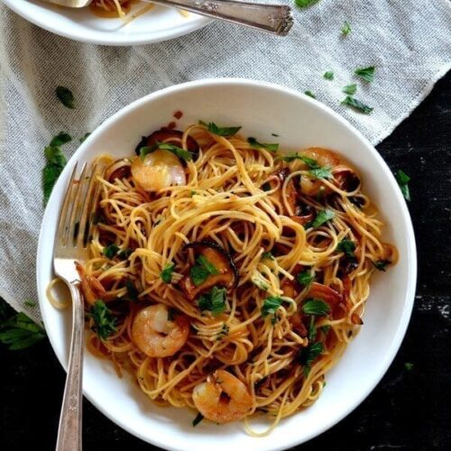

Soy Sauce Butter Pasta with Shrimp and Shiitakes

Description
Soy sauce & butter are an incredible combo. Add shrimp and earthy
shiitake mushrooms and the soy sauce butter flavors really pop in this
easy-to-make pasta.
Ingredients
- 10 oz. dried pasta
- olive oil
- 8 oz. shrimp (peeled, deveined, and thoroughly pat dry)
- 2 cloves garlic (minced)
- 2 shallots (minced)
- 8 oz. shiitake mushrooms (thinly sliced)